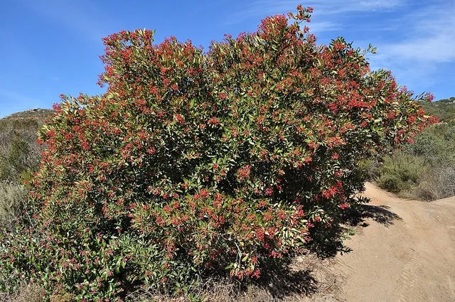

Wild fruit · Nov–Jan
Toyon berries
Heteromeles arbutifolia
Also called Toyon berries
Toyon berries is a wild fruit you can forage from November to January in California. California holly shrub with clusters of bright red berries in winter.

Caution. Always cook; raw berries contain cyanide compounds.
When is toyon berries in season in the United States?
Toyon berries is usually in season November to January. Timing shifts with weather, latitude and altitude.
Where does toyon berries grow in the United States?
Toyon berries grows in California, Hawaii. Regions: California.
How do you recognise toyon berries?
California holly shrub with clusters of bright red berries in winter.
How do you harvest toyon berries?
Pick only fully ripe fruit that comes away easily, into a shallow container so it doesn't crush. Leave plenty on the plant for birds and wildlife.
How do you eat toyon berries?
Cooked into syrup or jelly.
How do you store toyon berries?
Cook and freeze.